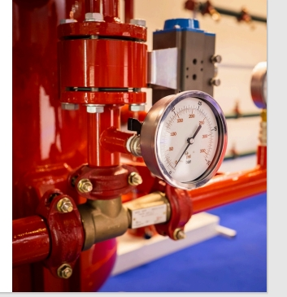

Let us help eliminate respiratory bottlenecks during turnarounds with these services:
- * Long- and short-term respiratory equipment rentals
- * Asset management, and maintenance of customer-owned equipment
- * Hydrogen sulfide (H2S) packages
- * Start-up or total turnaround safety services and consulting
- * In-Plant Service Centers: bring Total Safety to your job site full time
- * Respiratory equipment rentals, cleaning, repair and maintenance
- * Respiratory fit testing – Pulmonary Function Test
- * Respiratory protection systems
- * Safety attendant services
- * Rescue Technicians
HYDRO TESTING
Hydrostatic testing of SCBA, EEBD,
Extinguishers & Fixed Suppression Cylinders,
Nitrogen Cylinders, Aviation cylinders, to
mention a few
GAS DETECTION
We Supply, Calibrate, Bump Test, General
Maintenance & Replace Sensors on various
makes of Gas Detection including; Drager,
MSA, BW, General Monitors, Otis, Sensitron &
Scott. (H2S O2 N2 CO2 CO LEL SO2) As well as
provide H2S training.

A. GAS DETECTION EQUIPMENT RENTAL AND SALES
Mao-Oak Resources Ltd provides the top-quality gas detection equipment and instrumentation
and the technical support that you need to keep your people safe and your operations efficient.
Total Safety has one of the largest fleets of connected and non-connected personal and area gas
detection monitors that are maintained, calibrated, and ready to deliver. Our gas detection
solution include:
- * Personal Gas Monitors
- * Area Gas Monitors
- * Single-gas monitors & Multi-gas monitors
- * Photo-ionization detectors (PIDs)
- * Flame-ionization detectors (FIDs)
- * Air sampling pumps and monitors
- * Fixed gas monitors
- * Connected gas monitors
- * Data-enabled gas monitors
- * Gas detection systems design, installation, inspection and maintenance
FIXED GAS DETECTION SYSTEMS
We specialize in the design, procurement, project management, installation,
testing and commissioning of fixed gas detection systems, including:
- * Controller- or PLC-based
- * Hard-wired or wireless
- * Integrated fire and gas
- *Audible and visual enunciation
- * Point or open path
- * Combustible, toxic, VOC and O2 gas sensors
B. GAS DETECTION SYSTEM INSPECTION, TESTING AND MAINTENANCE
Mao-Oak’s dependable, scalable gas detection services protect your workers from the dangers
associated with flammable and toxic gases.
We have the expertise in gas detection solutions, breathing air systems, and contingency planning
to design a service package that fits your specific needs, ensures safe operations, and protects
your people.
Mao-Oak Resources Ltd provides all the top-quality equipment and gas detection
instrumentation you need. Our gas detection solutions include:
- * Personal gas monitors
- * Area gas monitors
- * Fixed gas monitors
- * Single and multi-gas monitors
- * A variety of LEL sensor technologies
- * A wide variety of toxic sensors
- * Photoionization Detectors (PIDs)
- * Flame-Ionization Detectors (FIDs)
- * Air sampling pumps and monitors
- * Connected gas monitors
- * Data-enabled gas monitors
- * Gas detection systems design, installation, inspection and maintenance
CALIBRATION GAS SERVICES.
We ensure your gas detectors are calibrated on schedule, on your site, or ours. Detection of
hazardous and combustible gases is a critical step in ensuring the safety of your workforce. Mao�Oak is proud to offer a complete line of gas detection services, including calibration and
maintenance for most major gas detector manufacturers.
With our advanced asset management system, we will contact you when your equipment is due
to be calibrated, giving you complete confidence that your gas detection fleet is managed in such
a way as to ensure safety, reliability, and compliance.
WHY IS CALIBRATING YOUR GAS DETECTOR
IMPORTANT?
The calibration process involves the adjustment of a sensor’s output to match a known
concentration of calibration gas. It ensures maximum accuracy of the instrumentation.
Calibration is important since all sensors will have some amount of drift over time and are subject
to potential effects such as over-exposures, poisoning, physical shocks, and environmental
changes. These types of events can cause sensors to be less accurate and could lead to injuries
or fatalities.
Trust the experts with your life-safety equipment repairs and maintenance. Let us know how we
can help you today!
Project: MV Dijama Vessel 25HP Outboard Engine:
-
1. We changed the Impeller rubber, impeller rubber housing, impeller plate, impeller key,
O-ring.
-
2. We also changed the gear slator, gear liver, gear link rod end, gear liver spring,
thermostat kit and thermostat cover gasket.
If you are looking for consumable personal protective equipment, we carry stock
from the most reliable brands for hearing protection, gloves, boots, fire-resistant
clothing, head, eye and face protection, gloves, and more
.jpeg)